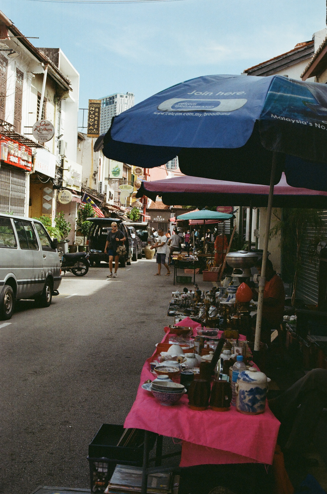

我不适合与人同行，这是这个三天两夜的旅行再次向我展示的一个事实。
当我流浪的时候我喜欢一言不发的游走，让那个“旅行者”的我出来讲话，讲给其他旅行者听我来自哪里，我又要去哪里，我好像已经习惯人和人的萍水相逢，也不愿承受他人带给我的不便。
或许下次同行前，要先交代清楚关于我的注意事项，你看。我累的时候喜欢席地而坐，我不追求看完或者历遍所有事情，我只想去地球上的不同地方看看那里的人和事是怎么样的，所以我选择尽量少输出，做个世界的观察者，让人和事在我眼前展开。
我不适合与人同行，或许不仅仅是旅行的时候。
我是最近才意识到我为什么喜欢去偏僻的国家独自旅行---因为在那里我可以是任何人。对着陌生人，大海，沙漠，街角餐馆老板，在河边的艺术家，青旅上铺的旅行者，路边的小野猫，我讲我是谁，我喜欢什么，我为何在此刻感到幸福或是悲伤，我不必因为听者不理解我感到任何失落，因为我们只是陌生人罢了
有时我有点希望我们都更自由一点，不承受彼此生命里的沉重，只是同行一小段，然后说再见。

All photos are by film